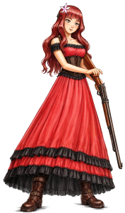
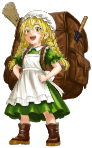
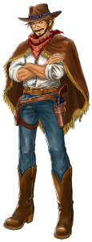
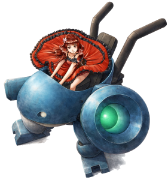

キャラクター紹介
エレナ・ストーン
|
 |
エレナ・ストーン（ Elena Stone ）。 |
オリーブ・ガーデナー
|
 |
オリーブ・ガーデナー（ Olive Gardener ）。 |
？？？
|
 |
賞金を稼いだり、ゴールドを採掘するなどして、その日暮らしをしている流れ者。 |
ガンライド
|
 |
乗用機関銃 ガンライド 伍式 "カワウソ"（ Gunride Model-5 "Otter" ）。 |
ストーリー
ジャックタウンの金鉱と忍び寄る影
エレナとオリーブは各地の金鉱を巡ってゴールドを収集していた。
ここジャックタウンの金鉱でも、いつも通りゴールドを収集して
早々に立ち去る予定だったが、どうやらそうもいかないらしい。
この町の金鉱は、形が変わり続ける奇妙な金鉱だったからだ。
過去に立ち寄った金鉱でも、形が変わることはあったが、
この町では、周囲にある森と谷も、形が変わってしまうようだ。
形が変わるのは悪魔の仕業だと言われているが、本当だろうか？
エレナたちはその悪魔を見たことがないし、ゴールドさえ収集できればよいので、
悪魔のことはあまり気にしていなかった。
そんなエレナたちに忍び寄る、ひとつの影があった。